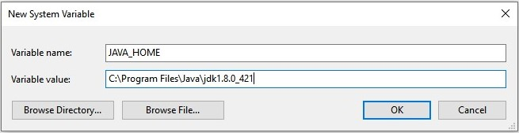
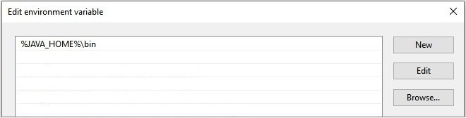
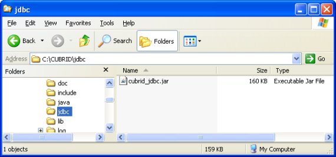

JDBC Driver¶
JDBC Overview¶
CUBRID JDBC driver (cubrid_jdbc.jar) implements an interface to enable access from applications in Java to CUBRID database server. CUBRID JDBC driver is installed in the <directory where CUBRID is installed>/jdbc directory. The driver has been developed based on the JDBC 2.0 specification and the default driver provided is complied with JDK 1.8.
Verifying CUBRID JDBC Driver Version
You can verify the version of JDBC driver as follows:
% jar -tf cubrid_jdbc.jar
META-INF/
META-INF/MANIFEST.MF
cubrid/
cubrid/jdbc/
cubrid/jdbc/driver/
cubrid/jdbc/jci/
cubrid/sql/
cubrid/jdbc/driver/CUBRIDBlob.class
...
CUBRID-JDBC-11.2.0.0035
Registering CUBRID JDBC Driver
Use the Class.forName (driver-class-name) method to register CUBRID JDBC driver. The following example shows how to load the cubrid.jdbc.driver.CUBRIDDriver class to register CUBRID JDBC driver.
import java.sql.*;
import cubrid.jdbc.driver.*;
public class LoadDriver {
public static void main(String[] Args) {
try {
Class.forName("cubrid.jdbc.driver.CUBRIDDriver");
} catch (Exception e) {
System.err.println("Unable to load driver.");
e.printStackTrace();
}
...
Installing and Configuring JDBC¶
Requirements
- JDK 1.8 or later
- CUBRID 2008 R2.0 (8.2.0) or later
- CUBRID JDBC driver 2008 R1.0 or later
Installing Java and Configuring Environment
You must already have Java installed and the JAVA_HOME environment variable configured in your system. You can download Java from the Developer Resources for Java Technology website ( https://www.oracle.com/java/technologies/downloads/#java8 ).
Configuring the environment variables for Windows
After installing Java, right-click on [This PC] and select [Properties]. Then, click on [Advanced system settings] under the Related settings to open the System Properties dialog box. Click on [Environment Variables] in the [Advanced] tab to open the Environment Variables dialog box.
In the [System variables], click [New]. Enter JAVA_HOME as the variable name and input the Java installation path (e.g., C:Program FilesJavajdk1.8.0_421) as the variable value, the click [OK].
Of system variables, select Path and then click [Edit]. Add %JAVA_HOME%\bin in the [Variable value] and then click [OK].
You can also configure JAVA_HOME and PATH values in the shell instead of using the way described above.
set JAVA_HOME= C:\Program Files\Java\jdk1.8.0_421
set PATH=%PATH%;%JAVA_HOME%\bin
Configuring the environment variables for Linux
Specify the directory path where Java is installed (example: /usr/java/jdk1.8.0_4211) as a JAVA_HOME environment variable and add $JAVA_HOME/bin to the PATH environment variable.
export JAVA_HOME=/usr/java/jdk1.8.0_421 #bash
export PATH=$JAVA_HOME/bin:$PATH #bash
setenv JAVA_HOME /usr/java/jdk1.8.0_421 #csh
set path = ($JAVA_HOME/bin $path) #csh
Configuring JDBC Driver
To use JDBC, you should specify the path where the CUBRID JDBC driver is located in the CLASSPATH environment variable.
The CUBRID JDBC driver (cubrid_jdbc.jar) is located in the jdbc directory under the directory of CUBRID installation.
Configuring the CLASSPATH environment variable for Windows
set CLASSPATH=C:\CUBRID\jdbc\cubrid_jdbc.jar:.
Configuring the CLASSPATH environment variable for Linux
export CLASSPATH=$HOME/CUBRID/jdbc/cubrid_jdbc.jar:.
Warning
If a general CUBRID JDBC driver has been installed in the same library directory ($JAVA_HOME/jre/lib/ext) where the JRE is installed, it may be loaded ahead of the server-side JDBC driver used by the Java stored procedure, which causing it to malfunction. In a Java stored procedure environment, make sure not to install a general CUBRID JDBC driver in the directory where the JRE is installed ($JAVA_HOME/jre/lib/ext).
JDBC Programming¶
Configuration Connection¶
The DriverManager is an interface for managing the JDBC driver. It is used to select a driver and create new database connection. If CUBRID JDBC driver is registered, you can connect a database by calling the DriverManager.getConnection (db-url, user-id, password) method.
The getConnection method returns the Connection object and it is used to execute queries and commands, and commit and roll back transactions. The syntax below shows the db-url argument for configuring connection.
jdbc:cubrid:<host>:<port>:<db-name>:[user-id]:[password]:[?<property> [& <property>]]
<host> ::=
hostname | ip_address
<property> ::= altHosts=<alternative_hosts>
| rcTime=<second>
| loadBalance=<bool_type>
| connectTimeout=<second>
| queryTimeout=<second>
| charSet=<character_set>
| zeroDateTimeBehavior=<behavior_type>
| logFile=<file_name>
| logOnException=<bool_type>
| logSlowQueries=<bool_type>&slowQueryThresholdMillis=<millisecond>
| useLazyConnection=<bool_type>
| useSSL=<bool_type>
| clientCacheSize=<unit_size>
| usePreparedStmtCache=<bool_type>
| preparedStmtCacheSize=<unit_size>
| preparedStmtCacheSqlLimit=<unit_size>
| hold_cursor=<bool_type>
<alternative_hosts> ::=
<standby_broker1_host>:<port> [,<standby_broker2_host>:<port>]
<behavior_type> ::= exception | round | convertToNull
<bool_type> ::= true | false
<unit_size> ::= multiple of mega byte
host: IP address or host name where the CUBRID broker is running
port: The CUBRID broker port number (default value: 33,000)
db-name: The name of the database to connect
user-id: The user ID which is connected to a database. There are two types of users in a database by default: dba and public. If this is NULL, it becomes <db_user> in db-url. If this is an empty string (“”), it becomes a public user.
password: The password of a user who is to be connected to a database. If this is NULL, <db_password> in db-url is used. If this is an empty string (“”), DB password becomes an empty string. You cannot include ‘:’ in the password of the db-url string.
<property>
altHosts: The host IP addresses and connection ports of one or more stand by brokers which will perform failover in the HA environment.
Note
Even if there are RW and RO together in ACCESS_MODE* setting of brokers of main host and altHosts, application decides the target host to access without the relation for the setting of ACCESS_MODE. Therefore, you should define the main host and altHosts as considering ACCESS_MODE of target brokers.
rcTime: Interval time (in seconds) to try to connect active brokers during failover in the HA environment. See the below URL example.
loadBalance: If this value is true, the application tries to connect with main host and altHosts in random order(default value: false).
connectTimeout: Timeout value (in seconds) for database connection. The default value is 30 seconds. If this value is 0, it means infinite waiting. This value is also applied when internal reconnection occurs after the initial connection. The DriverManger.setLoginTimeout () method can be used to configure it; however, the value configured in this method will be ignored if a value is configured in the connection URL.
queryTimeout: Timeout value (in seconds) for query execution (default value: 0, infinite). The maximum value is 2,000,000. This value can be changed by the DriverManger.setQueryTimeout () method.
Note
When you run executeBatch() method, the query timeout is applied in one method call, not in one query.
charSet: The character set of a database to be connected
zeroDateTimeBehavior: The property used to determine the way to handle an output value; because JDBC does not allow a value having zero for both date and time regardless of date and time in the object with the java.sql.Date type. For information about the value having zero for both date and date, see Date/Time Types.
The default operation is exception. The operation for each configuration is as follows:
- exception: Default operation. It is handled as an SQLException exception.
- round: Converts to the minimum value allowed for a type to be returned. Exceptionally, when the value’s type is TIMESTAMP, this value is rounded as ‘1970-01-01 00:00:00’(GST). (yyyy-mm-dd hh24:mi:ss)
- convertToNull: Converts to NULL.
logFile: The name of a log file for debugging (default value: cubrid_jdbc.log). If a path is not configured, it is stored the location where applications are running.
logOnException: Whether to log exception handling for debugging (default value: false)
logSlowQueries: Whether to log slow queries for debugging (default value: false)
- slowQueryThresholdMillis: Timeout value (in milliseconds) of slow queries (default value: 60,000).
useLazyConnection: If this is true, it returns success without connecting to the broker when user requests the connection, and it connects to the broker after calling prepare or execute function(default: false). If this value is true, it can prevent from access delay or failure as many application clients restart simultaniously and create connection pools.
useSSL: Packet Encryption mode (Default: false)
- Packet encryption: useSSL = true
- Plain text: useSSL = false
clientCacheSize: cache size for result-cache * the unit is multiple of mega-byte * the range is 1 ~ 1024 (1 mega-byte to 1 giga-byte) * the default value is 1
usePreparedStmtCache: Prepared Statement Cache mode (Default: false)
preparedStmtCacheSize: If usePreparedStmtCache is TRUE, the number of SQLs that can be cached (Default:25, Min:1, Max:2147483647)
preparedStmtCacheSqlLimit: If usePreparedStmtCache is TRUE, length of SQL that can be cached (Default:256, Min:1, Max:2147483647)
hold_cursor: Cursor holdability setting (default: true). If this value is false, CLOSE_CURSORS_AT_COMMIT is set, and if true, HOLD_CURSORS_OVER_COMMIT is set. For details, see Cursor Holdability.
Example 1
--connection URL string when user name and password omitted
URL=jdbc:CUBRID:192.168.0.1:33000:demodb:public::
--connection URL string when zeroDateTimeBehavior property specified
URL=jdbc:CUBRID:127.0.0.1:33000:demodb:public::?zeroDateTimeBehavior=convertToNull
--connection URL string when charSet property specified
URL=jdbc:CUBRID:192.168.0.1:33000:demodb:public::?charSet=utf-8
--connection URL string when queryTimeout and charSet property specified
URL=jdbc:CUBRID:127.0.0.1:33000:demodb:public::?queryTimeout=1&charSet=utf-8
--connection URL string when a property(altHosts) specified for HA
URL=jdbc:CUBRID:192.168.0.1:33000:demodb:public::?altHosts=192.168.0.2:33000,192.168.0.3:33000
--connection URL string when properties(altHosts,rcTime, connectTimeout) specified for HA
URL=jdbc:CUBRID:192.168.0.1:33000:demodb:public::?altHosts=192.168.0.2:33000,192.168.0.3:33000&rcTime=600&connectTimeout=5
--connection URL string when properties(altHosts,rcTime, charSet) specified for HA
URL=jdbc:CUBRID:192.168.0.1:33000:demodb:public::?altHosts=192.168.0.2:33000,192.168.0.3:33000&rcTime=600&charSet=utf-8
--connection URL string when useSSL property specified for encrypted connection
URL=jdbc:CUBRID:192.168.0.1:33000:demodb:public::?useSSL=true
--connection URL string when clientCacheSize property specified for result-cache
URL=jdbc:CUBRID:192.168.0.1:33000:demodb:public::?clientCacheSize=1
--connection URL string when usePreparedStmtCache property specified for prepared stament cache
URL=jdbc:CUBRID:192.168.0.1:33000:demodb:public::?usePreparedStmtCache=true&preparedStmtCacheSize=100&preparedStmtCacheSqlLimit=1024"
--connection URL string when hold_cursor property specified for cursor holdability
URL=jdbc:CUBRID:192.168.0.1:33000:demodb:public::?hold_cursor=true
Example 2
String url = "jdbc:cubrid:192.168.0.1:33000:demodb:public::";
String userid = "";
String password = "";
try {
Connection conn =
DriverManager.getConnection(url,userid,password);
// Do something with the Connection
...
} catch (SQLException e) {
System.out.println("SQLException:" + e.getMessage());
System.out.println("SQLState: " + e.getSQLState());
}
...
Note
- Because a colon (:) and a question mark are used as a separator in the URL string, it is not allowed to use them as parts of a password. To use them in a password, you must specify a user name (user-id) and a password (password) as a separate argument in the getConnection method.
- The database connection in thread-based programming must be used independently each other.
- The rollback method requesting transaction rollback will be ended after a server completes the rollback job.
- In autocommit mode, the transaction is not committed if all results are not fetched after running the SELECT statement. Therefore, although in autocommit mode, you should end the transaction by executing COMMIT or ROLLBACK if some error occurs during fetching for the resultset.
Warning
The useSSL flag must match with mode of the broker trying to connect. If the encryption mode is different from the server that trying to connect, that connection request will be rejected. Please refer the following cases that are not allowed.
- useSSL=true, connection request will be rejected when the broker is in ‘normal mode’ (cubrid_broker.conf: SSL = OFF)
- useSSL=false, connection request will be rejected when the broker is in ‘encryption mode’ (cubrid_broker.conf: SSL = ON)
The clientCacheSize works only when JDBC_CACHE or JDBC_CACHE_ONLY_HINT of broker configure is ON.
Connecting with DataSource¶
DataSource is the concept to be introduced in JDBC 2.0 API extention; it supports connection pooling and distributed transaction. CUBRID supports only connection pooling and do not supports distributed transaction and JNDI.
CUBRIDDataSource is DataSource implemented in CUBRID.
Creating a DataSource Object
To create a DataSource object, call as follows.
CUBRIDDataSource ds = null;
ds = new CUBRIDDataSource();
Setting Connection Properties
Connection properties are used to configure connections between datasource and CUBRID DBMS. General properties are a DB name, a host name, a port number, a user name and a password.
To set or get the values of properties, use below methods which is implemented in cubrid.jdbc.driver.CUBRIDDataSource.
public PrintWriter getLogWriter();
public void setLogWriter(PrintWriter out);
public void setLoginTimeout(int seconds);
public int getLoginTimeout();
public String getDatabaseName();
public String getDatabaseName();
public String getDataSourceName();
public String getDescription();
public String getNetworkProtocol();
public String getPassword();
public int getPortNumber();
public int getPort();
public String getRoleName();
public String getServerName();
public String getUser();
public String getURL();
public String getUrl();
public void setDatabaseName(String dbName);
public void setDescription(String desc);
public void setNetworkProtocol(String netProtocol);
public void setPassword(String psswd);
public void setPortNumber(int p);
public void setPort(int p);
public void setRoleName(String rName);
public void setServerName(String svName);
public void setUser(String uName);
public void setUrl(String urlString);
public void setURL(String urlString);
Especially, use a setURL() method to set the property through a URL string. Regarding URL string, see Configuration Connection.
import cubrid.jdbc.driver.CUBRIDDataSource;
...
CUBRIDDataSource ds = null;
ds = new CUBRIDDataSource();
ds.setUrl("jdbc:cubrid:10.113.153.144:55300:demodb:::?charset=utf8&logSlowQueries=true&slowQueryThresholdMillis=1000&logTraceApi=true&logTraceNetwork=true");
Call getConnection method to get a connection object from DataSource.
Connection connection = null;
connection = ds.getConnection("dba", "");
CUBRIDConnectionPoolDataSource is an object which connection-pool datasource is implemented in CUBRID; it includes the methods of the same names with the methods of CUBRIDDataSource.
For detail examples, see Connecting to a DataSource Object in JDBC Sample Program.
Checking SQL LOG¶
The connection URL information can be printed out by calling cubrid.jdbc.driver.CUBRIDConnection.toString() method.
e.g.) cubrid.jdbc.driver.CUBRIDConnection(CAS ID : 1, PROCESS ID : 22922)
You can find SQL log of that CAS easily by CAS ID which is printed out.
For more details, see Checking SQL Log.
Checking Foreign Key Information¶
You can check foreign key information by using getImportedKeys, getExportedKeys, and getCrossReference methods of the DatabaseMetaData interface. The usage and example of each method are as follows:
getImportedKeys(String catalog, String schema, String table)
getExportedKeys(String catalog, String schema, String table)
getCrossReference(String parentCatalog, String parentSchema, String parentTable, String foreignCatalog, String foreignSchema, String foreignTable)
- getImportedKeys method: Retrieves information of primary key columns which are referred by foreign key columns in a given table. The results are sorted by PKTABLE_NAME and KEY_SEQ.
- getExportedKeys method: Retrieves information of all foreign key columns which refer to primary key columns in a given table. The results are sorted by FKTABLE_NAME and KEY_SEQ.
- getCrossReference method: Retrieves information of primary key columns which are referred by foreign key columns in a given table. The results are sorted by PKTABLE_NAME and KEY_SEQ.
Return Value
When the methods above are called, the ResultSet consisting of 14 columns listed in the table below is returned.
| Name | Type | Note |
|---|---|---|
| PKTABLE_CAT | String | null without exception |
| PKTABLE_SCHEM | String | null without exception |
| PKTABLE_NAME | String | The name of a primary key table |
| PKCOLUMN_NAME | String | The name of a primary key column |
| FKTABLE_CAT | String | null without exception |
| FKTABLE_SCHEM | String | null without exception |
| FKTABLE_NAME | String | The name of a foreign key table |
| FKCOLUMN_NAME | String | The name of a foreign key column |
| KEY_SEQ | short | Sequence of columns of foreign keys or primary keys (starting from 1) |
| UPDATE_RULE | short | The corresponding values to referring actions defined as to foreign keys when primary keys are updated. Cascade=0, Restrict=2, No action=3, Set null=4 |
| DELETE_RULE | short | The corresponding value to referring actions defined as to foreign keys when primary keys are deleted. Cascade=0, Restrict=2, No action=3, Set null=4 |
| FK_NAME | String | Foreign key name |
| PK_NAME | String | Primary key name |
| DEFERRABILITY | short | 6 without exception (DatabaseMetaData.importedKeyInitiallyImmediate) |
Example
import java.sql.*;
import java.lang.*;
import cubrid.jdbc.driver.*;
public class Metadata_Sample
{
public static String getRuleName(String rule) {
int r = Integer.parseInt(rule);
switch(r) {
case DatabaseMetaData.importedKeyCascade:
return "cascade (" + rule + ")";
case DatabaseMetaData.importedKeyRestrict:
return "restrict (" + rule + ")";
case DatabaseMetaData.importedKeySetNull:
return "set null (" + rule + ")";
case DatabaseMetaData.importedKeyNoAction:
return "no action (" + rule + ")";
case DatabaseMetaData.importedKeySetDefault:
return "set default (" + rule + ")";
default:
return "unknown (" + rule + ")";
}
}
public static String getDeferrabilityName(String deferrability) {
int d = Integer.parseInt(deferrability);
switch(d) {
case DatabaseMetaData.importedKeyInitiallyDeferred:
return "initially deferred (" + deferrability + ")";
case DatabaseMetaData.importedKeyInitiallyImmediate:
return "initially immediate (" + deferrability + ")";
case DatabaseMetaData.importedKeyNotDeferrable:
return "not deferrable (" + deferrability + ")";
default:
return "unknown (" + deferrability + ")";
}
}
public static void printFkInfo(ResultSet rs) throws Exception {
while(rs.next()) {
System.out.println("\n<" + rs.getString("FK_NAME") + ">");
System.out.println("01. PKTABLE_CAT : " + rs.getString("PKTABLE_CAT"));
System.out.println("02. PKTABLE_SCHEM : " + rs.getString("PKTABLE_SCHEM"));
System.out.println("03. PKTABLE_NAME : " + rs.getString("PKTABLE_NAME"));
System.out.println("04. PKCOLUMN_NAME : " + rs.getString("PKCOLUMN_NAME"));
System.out.println("05. FKTABLE_CAT : " + rs.getString("FKTABLE_CAT"));
System.out.println("06. FKTABLE_SCHEM : " + rs.getString("FKTABLE_SCHEM"));
System.out.println("07. FKTABLE_NAME : " + rs.getString("FKTABLE_NAME"));
System.out.println("08. FKCOLUMN_NAME : " + rs.getString("FKCOLUMN_NAME"));
System.out.println("09. KEY_SEQ : " + rs.getString("KEY_SEQ"));
System.out.println("10. UPDATE_RULE : " + getRuleName(rs.getString("UPDATE_RULE")));
System.out.println("11. DELETE_RULE : " + getRuleName(rs.getString("DELETE_RULE")));
System.out.println("12. FK_NAME : " + rs.getString("FK_NAME"));
System.out.println("13. PK_NAME : " + rs.getString("PK_NAME"));
System.out.println("14. DEFERRABILITY : " + getDeferrabilityName(rs.getString("DEFERRABILITY")));
}
}
public static void main (String args []) {
Connection conn = null;
Statement stmt;
DatabaseMetaData dbmd;
ResultSet rs;
try {
conn = (CUBRIDConnection)DriverManager.getConnection("jdbc:cubrid:localhost:33000:demodb:::", "dba", "");
stmt = conn.createStatement();
dbmd = conn.getMetaData();
stmt.executeUpdate("drop table if exists refer_1");
stmt.executeUpdate("drop table if exists refer_2");
stmt.executeUpdate("drop table if exists referred_1");
stmt.executeUpdate("drop table if exists referred_2");
stmt.executeUpdate("create table referred_1 ("
+ "pk1 int,"
+ "pk2 int,"
+ "primary key (pk1, pk2))");
stmt.executeUpdate("create table referred_2 ("
+ "pk int primary key)");
stmt.executeUpdate("create table refer_1 ("
+ "pk int primary key,"
+ "fk1 int,"
+ "fk2 int,"
+ "fk3 int,"
+ "constraint refer_1_fk1_2_fk foreign key (fk1, fk2) references referred_1(pk1, pk2),"
+ "constraint refer_1_fk3_fk foreign key (fk3) references referred_2(pk))");
stmt.executeUpdate("create table refer_2 ("
+ "pk int primary key,"
+ "fk1 int,"
+ "fk2 int,"
+ "fk3 int,"
+ "constraint refer_2_fk1_2_fk foreign key (fk1, fk2) references referred_1(pk1, pk2) "
+ "on update set null on delete no action,"
+ "constraint refer_2_fk3_fk foreign key (fk3) references referred_2(pk) "
+ "on update restrict on delete cascade)");
System.out.println("\n============== getImportedKeys() ==================");
rs = dbmd.getImportedKeys(null, null, "refer_1");
printFkInfo(rs);
rs.close();
rs = dbmd.getImportedKeys(null, null, "refer_2");
printFkInfo(rs);
rs.close();
System.out.println("\n=============== getExportedKeys() =================");
rs = dbmd.getExportedKeys(null, null, "referred_1");
printFkInfo(rs);
rs.close();
rs = dbmd.getExportedKeys(null, null, "referred_2");
printFkInfo(rs);
rs.close();
System.out.println("\n=============== getCrossReference() =================");
rs = dbmd.getCrossReference(null, null, "referred_1", null, null, "refer_1");
printFkInfo(rs);
rs.close();
rs = dbmd.getCrossReference(null, null, "referred_1", null, null, "refer_2");
printFkInfo(rs);
rs.close();
rs = dbmd.getCrossReference(null, null, "referred_2", null, null, "refer_1");
printFkInfo(rs);
rs.close();
rs = dbmd.getCrossReference(null, null, "referred_2", null, null, "refer_2");
printFkInfo(rs);
rs.close();
rs = dbmd.getCrossReference(null, null, "refer_1", null, null, "refer_2");
printFkInfo(rs);
rs.close();
} catch (Exception e) {
e.printStackTrace();
}
}
}
Using Object Identifiers (OIDs) and Collections¶
In addition to the methods defined in the JDBC specification, CUBRID JDBC driver provides methods that handle OIDs and collections (set, multiset, and sequence).
To use these methods, you must import cubrid.sql.*; as well as the CUBRID JDBC driver classes which are imported by default. Furthermore, you should convert to not the ResultSet class, which is provided by the standard JDBC API) but the CUBRIDResultSet class to get result.
import cubrid.jdbc.driver.* ;
import cubrid.sql.* ;
...
CUBRIDResultSet urs = (CUBRIDResultSet) stmt.executeQuery(
"SELECT city FROM location");
Warning
If extended API is used, transactions won’t be automatically committed even though AUTOCOMMIT is set to TRUE. Therefore, you must explicitly commit transactions for open connections. The extended API of CUBRID is method that handle OIDs, collections, etc.
Using OIDs¶
You must follow the rules below when using OIDs.
- To use CUBRIDOID, you must import cubrid.sql. * . (a)
- You can get OIDs by specifying the class name in the SELECT statement. It can also be used together with other properties. (b)
- ResultSet for queries must be received by CUBRIDResultSet. (c)
- The method to get OIDs from CUBRIDResultSet is getOID (). (d)
- You can get the value from OIDs by using the getValues () method and the result will be ResultSet. (e)
- You can substitute OID with a value by using the setValues () method. (f)
- When you use extended API, you must always execute commit () for connection. (g)
Example
import java.sql.*;
import cubrid.sql.*; //a
import cubrid.jdbc.driver.*;
/*
CREATE TABLE oid_test(
id INTEGER,
name VARCHAR(10),
age INTEGER
);
INSERT INTO oid_test VALUES(1, 'Laura', 32);
INSERT INTO oid_test VALUES(2, 'Daniel', 39);
INSERT INTO oid_test VALUES(3, 'Stephen', 38);
*/
class OID_Sample
{
public static void main (String args [])
{
// Making a connection
String url= "jdbc:cubrid:localhost:33000:demodb:public::";
String user = "dba";
String passwd = "";
// SQL statement to get OID values
String sql = "SELECT oid_test from oid_test"; //b
// columns of the table
String[] attr = { "id", "name", "age" } ;
// Declaring variables for Connection and Statement
Connection con = null;
Statement stmt = null;
CUBRIDResultSet rs = null;
ResultSetMetaData rsmd = null;
try {
Class.forName("cubrid.jdbc.driver.CUBRIDDriver");
} catch (ClassNotFoundException e) {
throw new IllegalStateException("Unable to load Cubrid driver", e);
}
try {
con = DriverManager.getConnection(url, user, passwd);
stmt = con.createStatement();
rs = (CUBRIDResultSet)stmt.executeQuery(sql); //c
rsmd = rs.getMetaData();
// Printing columns
int numOfColumn = rsmd.getColumnCount();
for (int i = 1; i <= numOfColumn; i++ ) {
String ColumnName = rsmd.getColumnName(i);
String JdbcType = rsmd.getColumnTypeName(i);
System.out.print(ColumnName );
System.out.print("("+ JdbcType + ")");
System.out.print(" | ");
}
System.out.print("\n");
// Printing rows
CUBRIDResultSet rsoid = null;
int k = 1;
while (rs.next()) {
CUBRIDOID oid = rs.getOID(1); //d
System.out.print("OID");
System.out.print(" | ");
rsoid = (CUBRIDResultSet)oid.getValues(attr); //e
while (rsoid.next()) {
for( int j=1; j <= attr.length; j++ ) {
System.out.print(rsoid.getObject(j));
System.out.print(" | ");
}
}
System.out.print("\n");
// New values of the first row
Object[] value = { 4, "Yu-ri", 19 };
if (k == 1) oid.setValues(attr, value); //f
k = 0;
}
con.commit(); //g
} catch(CUBRIDException e) {
e.printStackTrace();
} catch(SQLException ex) {
ex.printStackTrace();
} finally {
if(rs != null) try { rs.close(); } catch(SQLException e) {}
if(stmt != null) try { stmt.close(); } catch(SQLException e) {}
if(con != null) try { con.close(); } catch(SQLException e) {}
}
}
}
Using Collections¶
The line “a” in the example 1 is where data of collection types (SET, MULTISET, and LIST) is fetched from CUBRIDResultSet. The results are returned as array format. Note that this can be used only when data types of all elements defined in the collection types are same.
Example 1
import java.sql.*;
import java.lang.*;
import cubrid.sql.*;
import cubrid.jdbc.driver.*;
// create class collection_test(
// settest set(integer),
// multisettest multiset(integer),
// listtest list(Integer)
// );
//
// insert into collection_test values({1,2,3},{1,2,3},{1,2,3});
// insert into collection_test values({2,3,4},{2,3,4},{2,3,4});
// insert into collection_test values({3,4,5},{3,4,5},{3,4,5});
class Collection_Sample
{
public static void main (String args [])
{
String url= "jdbc:cubrid:127.0.0.1:33000:demodb:public::";
String user = "";
String passwd = "";
String sql = "select settest,multisettest,listtest from collection_test";
try {
Class.forName("cubrid.jdbc.driver.CUBRIDDriver");
} catch(Exception e){
e.printStackTrace();
}
try {
Connection con = DriverManager.getConnection(url,user,passwd);
Statement stmt = con.createStatement();
CUBRIDResultSet rs = (CUBRIDResultSet) stmt.executeQuery(sql);
CUBRIDResultSetMetaData rsmd = (CUBRIDResultSetMetaData) rs.getMetaData();
int numbOfColumn = rsmd.getColumnCount();
while (rs.next ()) {
for (int j=1; j<=numbOfColumn; j++ ) {
Object[] reset = (Object[]) rs.getCollection(j); //a
for (int m=0 ; m < reset.length ; m++)
System.out.print(reset[m] +",");
System.out.print(" | ");
}
System.out.print("\n");
}
rs.close();
stmt.close();
con.close();
} catch(SQLException e) {
e.printStackTrace();
}
}
}
Example 2
import java.sql.*;
import java.io.*;
import java.lang.*;
import cubrid.sql.*;
import cubrid.jdbc.driver.*;
// create class collection_test(
// settest set(integer),
// multisettest multiset(integer),
// listtest list(Integer)
// );
//
// insert into collection_test values({1,2,3},{1,2,3},{1,2,3});
// insert into collection_test values({2,3,4},{2,3,4},{2,3,4});
// insert into collection_test values({3,4,5},{3,4,5},{3,4,5});
class SetOP_Sample {
public static void main(String args[]) {
String url = "jdbc:cubrid:127.0.0.1:33000:demodb:public::";
String user = "";
String passwd = "";
String sql = "select collection_test from collection_test";
try {
Class.forName("cubrid.jdbc.driver.CUBRIDDriver");
} catch (Exception e) {
e.printStackTrace();
}
try {
CUBRIDConnection con = (CUBRIDConnection) DriverManager.getConnection(url, user, passwd);
Statement stmt = con.createStatement();
CUBRIDResultSet rs = (CUBRIDResultSet) stmt.executeQuery(sql);
while (rs.next()) {
CUBRIDOID oid = rs.getOID(1);
oid.addToSet("settest", Integer.valueOf(10));
oid.addToSet("multisettest", Integer.valueOf(20));
oid.addToSequence("listtest", 1, Integer.valueOf(30));
oid.addToSequence("listtest", 100, Integer.valueOf(100));
oid.putIntoSequence("listtest", 99, Integer.valueOf(99));
oid.removeFromSet("settest", Integer.valueOf(1));
oid.removeFromSet("multisettest", Integer.valueOf(2));
oid.removeFromSequence("listtest", 99);
oid.removeFromSequence("listtest", 1);
}
con.commit();
rs.close();
stmt.close();
con.close();
} catch (SQLException e) {
e.printStackTrace();
}
}
}
Getting Auto Increment Column Value¶
Auto increment (AUTO_INCREMENT) is a column-related feature that increments the numeric value of each row. For more information, see Column Definition. It can be defined only for numeric domains (SMALLINT, INTEGER, DECIMAL (p, 0), and NUMERIC (p, 0)).
Auto increment is recognized as automatically created keys in the JDBC programs. To retrieve the key, you need to specify the time to insert a row from which the automatically created key value is to be retrieved. To perform it, you must set the flag by calling Connection.prepareStatement and Statement.execute methods. In this case, the command executed should be the INSERT statement or INSERT within SELECT statement. For other commands, the JDBC driver ignores the flag-setting parameter.
Steps
Use one of the following to indicate whether or not to return keys created automatically. The following method forms are used for tables of the database server that supports the auto increment columns. Each method form can be applied only to a single-row INSERT statement.
Write the PreparedStatement object as shown below.
Connection.prepareStatement(sql statement, Statement.RETURN_GENERATED_KEYS);
To insert a row by using the Statement.execute method, use the Statement.execute method as shown below.
Statement.execute(sql statement, Statement.RETURN_GENERATED_KEYS);
Get the ResultSet object containing automatically created key values by calling the PreparedStatement.getGeneratedKeys or Statement.getGeneratedKeys method. Note that the data type of the automatically created keys in ResultSet is DECIMAL regardless of the data type of the given domain.
Example
The following example shows how to create a table with auto increment, enter data into the table so that automatically created key values are entered into auto increment columns, and check whether the key values are successfully retrieved by using the Statement.getGeneratedKeys () method. Each step is explained in the comments for commands that correspond to the steps above.
import java.sql.*;
import java.math.*;
import cubrid.jdbc.driver.*;
Connection con;
Statement stmt;
ResultSet rs;
java.math.BigDecimal iDColVar;
...
stmt = con.createStatement(); // Create a Statement object
// Create table with identity column
stmt.executeUpdate(
"CREATE TABLE EMP_PHONE (EMPNO CHAR(6), PHONENO CHAR(4), " +
"IDENTCOL INTEGER AUTO_INCREMENT)");
stmt.execute(
"INSERT INTO EMP_PHONE (EMPNO, PHONENO) " +
"VALUES ('000010', '5555')", // Insert a row <Step 1>
Statement.RETURN_GENERATED_KEYS); // Indicate you want automatically
rs = stmt.getGeneratedKeys(); // generated keys
// Retrieve the automatically <Step 2>
// generated key value in a ResultSet.
// Only one row is returned.
// Create ResultSet for query
while (rs.next()) {
java.math.BigDecimal idColVar = rs.getBigDecimal(1);
// Get automatically generated key value
System.out.println("automatically generated key value = " + idColVar);
}
rs.close(); // Close ResultSet
stmt.close(); // Close Statement
Using BLOB/CLOB¶
The interface that handles LOB data in JDBC is implemented based on JDBC 4.0 specification. The constraints of the interface are as follows:
Only sequential write is supported when creating BLOB or CLOB object. Writing to arbitrary locations is not supported.
You cannot change BLOB or CLOB data by calling methods of BLOB or CLOB object fetched from ResultSet.
Blob.truncate, Clob.truncate, Blob.position, and Clob.position methods are supported.
You cannot bind the LOB data by calling PreparedStatement.setAsciiStream, PreparedStatement.setBinaryStream, and PreparedStatement.setCharacterStream methods for BLOB/CLOB type columns.
To use BLOB / CLOB type in the environment where JDBC 4.0 is not supported such as JDK versions 1.5 or earlier, you must do explicit type conversion for the conn object to CUBRIDConnection. See example below.
//JDK 1.6 or higher import java.sql.*; Connection conn = DriverManager.getConnection(url, id, passwd); Blob blob = conn.createBlob(); //JDK 1.5 or lower import java.sql.*; import cubrid.jdbc.driver.*; Connection conn = DriverManager.getConnection(url, id, passwd); Blob blob = ((CUBRIDConnection)conn).createBlob();
Storing LOB Data
You can bind the LOB type data in the following ways.
- Create java.sql.Blob or java.sql.Clob object, store file content in the object, use setBlob () or setClob () of PreparedStatement (example 1).
- Execute a query, get java.sql.Blob or java.sql.Clob object from the ResultSet object, and bind the object in PreparedStatement (example 2).
Example 1
Class.forName("cubrid.jdbc.driver.CUBRIDDriver");
Connection conn = DriverManager.getConnection ("jdbc:cubrid:localhost:33000:image_db:user1:password1:", "", "");
PreparedStatement pstmt1 = conn.prepareStatement("INSERT INTO doc(image_id, doc_id, image) VALUES (?,?,?)");
pstmt1.setString(1, "image-21");
pstmt1.setString(2, "doc-21");
//Creating an empty file in the file system
Blob bImage = conn.createBlob();
byte[] bArray = new byte[256];
...
//Inserting data into the external file. Position is start with 1.
bImage.setBytes(1, bArray);
//Appending data into the external file
bImage.setBytes(257, bArray);
...
pstmt1.setBlob(3, bImage);
pstmt1.executeUpdate();
...
Example 2
Class.forName("cubrid.jdbc.driver.CUBRIDDriver");
Connection conn = DriverManager.getConnection ("jdbc:cubrid:localhost:33000:image_db:user1:password1:", "", "");
conn.setAutoCommit(false);
PreparedStatement pstmt1 = conn.prepareStatement("SELECT image FROM doc WHERE image_id = ? ");
pstmt1.setString(1, "image-21");
ResultSet rs = pstmt1.executeQuery();
while (rs.next())
{
Blob bImage = rs.getBlob(1);
PreparedStatement pstmt2 = conn.prepareStatement("INSERT INTO doc(image_id, doc_id, image) VALUES (?,?,?)");
pstmt2.setString(1, "image-22")
pstmt2.setString(2, "doc-22")
pstmt2.setBlob(3, bImage);
pstmt2.executeUpdate();
pstmt2.close();
}
pstmt1.close();
conn.commit();
conn.setAutoCommit(true);
conn.close();
...
Getting LOB Data
You can get the LOB type data in the following ways.
- Get data directly from ResultSet by using getBytes () or getString () method (example 1).
- Get the java.sql.Blob or java.sql.Clob object from ResultSet by calling getBlob () or getClob () method and get data for this object by using the getBytes () or getSubString () method (example 2).
Example 1
Connection conn = DriverManager.getConnection ("jdbc:cubrid:localhost:33000:image_db:user1:password1:", "", "");
// Getting data directly from ResetSet
PrepareStatement pstmt1 = conn.prepareStatement("SELECT content FROM doc_t WHERE doc_id = ? ");
pstmt1.setString(1, "doc-10");
ResultSet rs = pstmt1.executeQuery();
while (rs.next())
{
String sContent = rs.getString(1);
System.out.println("doc.content= "+sContent.);
}
Example 2
Connection conn = DriverManager.getConnection ("jdbc:cubrid:localhost:33000:image_db:user1:password1:", "", "");
// Getting BLOB data from ResultSet and getting data from the BLOB object
PrepareStatement pstmt2 = conn.prepareStatement("SELECT image FROM image_t WHERE image_id = ?");
pstmt2.setString(1,"image-20");
ResultSet rs = pstmt2.executeQuery();
while (rs.next())
{
Blob bImage = rs.getBlob(1);
Bytes[] bArray = bImange.getBytes(1, (int)bImage.length());
}
Note
If a string longer than defined max length is inserted (INSERT) or updated (UPDATE), the string will be truncated.
setBoolean¶
- prepareStatement.setBoolean(1, true) will set
- 1 for numeric types
- ‘1’ for string types
- prepareStatement.setBooelan(1, false) will set
- 0 for numeric types
- ‘0’ for string types
Note
Behavior of legacy versions
- prepareStatement.setBoolean(1, true) set
- as 2008 R4.1, 9.0, 1 of BIT(1) type
- as 2008 R4.3, 2008 R4.4, 9.1, 9.2, 9.3, -128 of SHORT type
JDBC Error Codes and Error Messages¶
JDBC error codes which occur in SQLException are as follows.
- All error codes are negative.
- After SQLException, error number can be shown by SQLException.getErrorCode() and error message can be shown by SQLException.getMessage().
- If the value of error code is between -21001 and -21999, it is caused by CUBRID JDBC methods.
- If the value of error code is between -10000 and -10999, it is caused by CAS and transferred by JDBC methods. For CAS errors, see CAS Error.
- If the value of error code is between 0 and -9999, it is caused by database server. For database server errors, see Database Server Errors.
| Error Number | Error Message |
|---|---|
| -21001 | Index’s Column is Not Object |
| -21002 | Server error |
| -21003 | Cannot communicate with the broker |
| -21004 | Invalid cursor position |
| -21005 | Type conversion error |
| -21006 | Missing or invalid position of the bind variable provided |
| -21007 | Attempt to execute the query when not all the parameters are binded |
| -21008 | Internal Error: NULL value |
| -21009 | Column index is out of range |
| -21010 | Data is truncated because receive buffer is too small |
| -21011 | Internal error: Illegal schema type |
| -21012 | File access failed |
| -21013 | Cannot connect to a broker |
| -21014 | Unknown transaction isolation level |
| -21015 | Internal error: The requested information is not available |
| -21016 | The argument is invalid |
| -21017 | Connection or Statement might be closed |
| -21018 | Internal error: Invalid argument |
| -21019 | Cannot communicate with the broker or received invalid packet |
| -21020 | No More Result |
| -21021 | This ResultSet do not include the OID |
| -21022 | Command is not insert |
| -21023 | Error |
| -21024 | Request timed out |
| -21101 | Attempt to operate on a closed Connection. |
| -21102 | Attempt to access a closed Statement. |
| -21103 | Attempt to access a closed PreparedStatement. |
| -21104 | Attempt to access a closed ResultSet. |
| -21105 | Not supported method |
| -21106 | Unknown transaction isolation level. |
| -21107 | invalid URL - |
| -21108 | The database name should be given. |
| -21109 | The query is not applicable to the executeQuery(). Use the executeUpdate() instead. |
| -21110 | The query is not applicable to the executeUpdate(). Use the executeQuery() instead. |
| -21111 | The length of the stream cannot be negative. |
| -21112 | An IOException was caught during reading the inputstream. |
| -21113 | Not supported method, because it is deprecated. |
| -21114 | The object does not seem to be a number. |
| -21115 | Missing or invalid position of the bind variable provided. |
| -21116 | The column name is invalid. |
| -21117 | Invalid cursor position. |
| -21118 | Type conversion error. |
| -21119 | Internal error: The number of attributes is different from the expected. |
| -21120 | The argument is invalid. |
| -21121 | The type of the column should be a collection type. |
| -21122 | Attempt to operate on a closed DatabaseMetaData. |
| -21123 | Attempt to call a method related to scrollability of non-scrollable ResultSet. |
| -21124 | Attempt to call a method related to sensitivity of non-sensitive ResultSet. |
| -21125 | Attempt to call a method related to updatability of non-updatable ResultSet. |
| -21126 | Attempt to update a column which cannot be updated. |
| -21127 | The query is not applicable to the executeInsert(). |
| -21128 | The argument row can not be zero. |
| -21129 | Given InputStream object has no data. |
| -21130 | Given Reader object has no data. |
| -21131 | Insertion query failed. |
| -21132 | Attempt to call a method related to scrollability of TYPE_FORWARD_ONLY Statement. |
| -21133 | Authentication failure |
| -21134 | Attempt to operate on a closed PooledConnection. |
| -21135 | Attempt to operate on a closed XAConnection. |
| -21136 | Illegal operation in a distributed transaction |
| -21137 | Attempt to access a CUBRIDOID associated with a Connection which has been closed. |
| -21138 | The table name is invalid. |
| -21139 | Lob position to write is invalid. |
| -21140 | Lob is not writable. |
| -21141 | Request timed out. |
JDBC Sample Program¶
The following sample shows how to connect to CUBRID by using the JDBC driver, and retrieve and insert data. To run the sample program, make sure that the database you are trying to connect to and the CUBRID broker are running. In the sample, you will use the demodb database that is automatically created during the installation.
Loading JDBC Driver
To connect to CUBRID, load the JDBC driver by using the forName () method of the Class. For more information, see JDBC Overview of the JDBC driver.
Class.forName("cubrid.jdbc.driver.CUBRIDDriver");
Connecting to Database
After loading the JDBC driver, use the getConnection () method of the DriverManager to connect to the database. To create a Connection object, you must specify information such as the URL which indicates the location of a database, user name, password, etc. For more information, see Configuration Connection.
String url = "jdbc:cubrid:localhost:33000:demodb:::";
String userid = "dba";
String password = "";
Connection conn = DriverManager.getConnection(url,userid,password);
To connect to a database, it is possible to use a DataSource object, too. If you want to include connection properties to a connection URL string, setURL method implemented in CUBRIDDataSource can be used.
import cubrid.jdbc.driver.CUBRIDDataSource;
...
ds = new CUBRIDDataSource();
ds.setURL("jdbc:cubrid:127.0.0.1:33000:demodb:::?charset=utf8&logSlowQueries=true&slowQueryThresholdMillis=1000&logTraceApi=true&logTraceNetwork=true");
For details about CUBRIDDataSource, see Connecting with DataSource.
Connecting to a DataSource Object
The following is an example to execute SELECT statements in multiple threads; they connect to DB with the setURL of CUBRIDDataSource, which is a DataSource implemented in CUBRID. Codes are separated with DataSourceMT.java and DataSourceExample.java.
- DataSourceMT.java includes a main() function. After a CUBRIDDataSource object is created and a setURL method is called to connect to DB, multiple threads run DataSourceExample.test method.
- In DataSourceExample.java, DataSourceExample.test is implemented; it is run on the threads in DataSourceMT.java.
DataSourceMT.java
import cubrid.jdbc.driver.*;
public class DataSourceMT {
static int num_thread = 20;
public static void main(String[] args) {
CUBRIDDataSource ds = null;
thrCPDSMT thread[];
ds = new CUBRIDDataSource();
ds.setURL("jdbc:cubrid:127.0.0.1:33000:demodb:::?charset=utf8&logSlowQueries=true&slowQueryThresholdMillis=1000&logTraceApi=true&logTraceNetwork=true");
try {
thread = new thrCPDSMT[num_thread];
for (int i = 0; i < num_thread; i++) {
Thread.sleep(1);
thread[i] = new thrCPDSMT(i, ds);
try {
Thread.sleep(1);
thread[i].start();
} catch (Exception e) {
}
}
for (int i = 0; i < num_thread; i++) {
thread[i].join();
System.err.println("join thread : " + i);
}
} catch (Exception e) {
e.printStackTrace();
System.exit(-1);
}
}
}
class thrCPDSMT extends Thread {
CUBRIDDataSource thread_ds;
int thread_id;
thrCPDSMT(int tid, CUBRIDDataSource ds) {
thread_id = tid;
thread_ds = ds;
}
public void run() {
try {
DataSourceExample.test(thread_ds);
} catch (Exception e) {
e.printStackTrace();
System.exit(-1);
}
}
}
DataSourceExample.java
import java.sql.*;
import javax.sql.*;
import cubrid.jdbc.driver.*;
public class DataSourceExample {
public static void printdata(ResultSet rs) throws SQLException {
try {
ResultSetMetaData rsmd = null;
rsmd = rs.getMetaData();
int numberofColumn = rsmd.getColumnCount();
while (rs.next()) {
for (int j = 1; j <= numberofColumn; j++)
System.out.print(rs.getString(j) + " ");
System.out.println("");
}
} catch (SQLException e) {
System.out.println("SQLException : " + e.getMessage());
throw e;
}
}
public static void test(CUBRIDDataSource ds) throws Exception {
Connection connection = null;
Statement statement = null;
ResultSet resultSet = null;
for (int i = 1; i <= 20; i++) {
try {
connection = ds.getConnection("dba", "");
statement = connection.createStatement();
String SQL = "SELECT * FROM code";
resultSet = statement.executeQuery(SQL);
while (resultSet.next()) {
printdata(resultSet);
}
if (i % 5 == 0) {
System.gc();
}
} catch (Exception e) {
e.printStackTrace();
} finally {
closeAll(resultSet, statement, connection);
}
}
}
public static void closeAll(ResultSet resultSet, Statement statement,
Connection connection) {
if (resultSet != null) {
try {
resultSet.close();
} catch (SQLException e) {
}
}
if (statement != null) {
try {
statement.close();
} catch (SQLException e) {
}
}
if (connection != null) {
try {
connection.close();
} catch (SQLException e) {
}
}
}
}
Manipulating Database (Executing Queries and Processing ResultSet)
To send a query statement to the connected database and execute it, create Statement, PrepardStatement, and CallableStatemen objects. After the Statement object is created, execute the query statement by using executeQuery () or executeUpdate () method of the Statement object. You can use the next () method to process the next row from the ResultSet that has been returned as a result of executing the executeQuery () method.
Note
In the version of 2008 R4.x or before, if you execute commit after query execution, ResultSet will be automatically closed. Therefore, you must not use ResultSet after commit. Generally CUBRID is executed in auto-commit mode; if you do not want for CUBRID being executed in auto-commit mode, you should specify conn.setAutocommit(false); in the code.
From 9.1, Cursor holdability is supported; therefore, you can use ResultSet after commit.
Disconnecting from Database
You can disconnect from a database by executing the close () method for each object.
CREATE, INSERT
The following is an example which connects to demodb, creates a table, executes a query with prepared statement and rolls back the query.
import java.util.*;
import java.sql.*;
public class Basic {
public static Connection connect() {
Connection conn = null;
try {
Class.forName("cubrid.jdbc.driver.CUBRIDDriver");
conn = DriverManager.getConnection("jdbc:cubrid:localhost:33000:demodb:::","dba","");
conn.setAutoCommit (false) ;
} catch ( Exception e ) {
System.err.println("SQLException : " + e.getMessage());
}
return conn;
}
public static void printdata(ResultSet rs) {
try {
ResultSetMetaData rsmd = null;
rsmd = rs.getMetaData();
int numberofColumn = rsmd.getColumnCount();
while (rs.next ()) {
for(int j=1; j<=numberofColumn; j++ )
System.out.print(rs.getString(j) + " " );
System.out.println("");
}
} catch ( Exception e ) {
System.err.println("SQLException : " + e.getMessage());
}
}
public static void main(String[] args) throws Exception {
Connection conn = null;
Statement stmt = null;
ResultSet rs = null;
PreparedStatement preStmt = null;
try {
conn = connect();
stmt = conn.createStatement();
stmt.executeUpdate("CREATE TABLE xoo ( a INT, b INT, c CHAR(10))");
preStmt = conn.prepareStatement("INSERT INTO xoo VALUES(?,?,'100')");
preStmt.setInt (1, 1) ;
preStmt.setInt (2, 1*10) ;
int rst = preStmt.executeUpdate () ;
rs = stmt.executeQuery("select a,b,c from xoo" );
printdata(rs);
conn.rollback();
stmt.close();
conn.close();
} catch ( Exception e ) {
conn.rollback();
System.err.println("SQLException : " + e.getMessage());
} finally {
if ( conn != null ) conn.close();
}
}
}
SELECT
The following example shows how to execute the SELECT statement by connecting to demodb which is automatically created when installing CUBRID.
import java.sql.*;
public class SelectData {
public static void main(String[] args) throws Exception {
Connection conn = null;
Statement stmt = null;
ResultSet rs = null;
try {
Class.forName("cubrid.jdbc.driver.CUBRIDDriver");
conn = DriverManager.getConnection("jdbc:cubrid:localhost:33000:demodb:::","dba","");
String sql = "SELECT name, players FROM event";
stmt = conn.createStatement();
rs = stmt.executeQuery(sql);
while(rs.next()) {
String name = rs.getString("name");
String players = rs.getString("players");
System.out.println("name ==> " + name);
System.out.println("Number of players==> " + players);
System.out.println("\n=========================================\n");
}
rs.close();
stmt.close();
conn.close();
} catch ( SQLException e ) {
System.err.println(e.getMessage());
} catch ( Exception e ) {
System.err.println(e.getMessage());
} finally {
if ( conn != null ) conn.close();
}
}
}
INSERT
The following example shows how to execute the INSERT statement by connecting to demodb which is automatically created when installing CUBRID. You can delete or update data the same way as you insert data so you can reuse the code below by simply modifying the query statement in the code.
import java.sql.*;
public class insertData {
public static void main(String[] args) throws Exception {
Connection conn = null;
Statement stmt = null;
try {
Class.forName("cubrid.jdbc.driver.CUBRIDDriver");
conn = DriverManager.getConnection("jdbc:cubrid:localhost:33000:demodb:::","dba","");
String sql = "insert into olympic(host_year, host_nation, host_city, opening_date, closing_date) values (2008, 'China', 'Beijing', to_date('08-08-2008','mm-dd-yyyy'), to_date('08-24-2008','mm-dd-yyyy'))";
stmt = conn.createStatement();
stmt.executeUpdate(sql);
System.out.println("A row is inserted.");
stmt.close();
} catch ( SQLException e ) {
System.err.println(e.getMessage());
} catch ( Exception e ) {
System.err.println(e.getMessage());
} finally {
if ( conn != null ) conn.close();
}
}
}
JDBC API¶
For details about JDBC API, see Java API Specification (https://docs.oracle.com/javase/7/docs/api/) and for details about Java, see Java SE Documentation (https://www.oracle.com/technetwork/java/javase/documentation/index.htm).
If cursor holdability is not configured, a cursor is maintained by default.
The following table shows the JDBC standard and extended interface supported by CUBRID. Note that some methods are not supported even though they are included in the JDBC 2.0 specification.
Supported JDBC Interface by CUBRID
| JDBC Standard Interface | JDBC Extended Interface | Supported |
|---|---|---|
| java.sql.Blob | Supported | |
| java.sql.CallableStatement | Supported | |
| java.sql.Clob | Supported | |
| java.sql.Connection | Supported | |
| java.sql.DatabaseMetaData | Supported | |
| java.sql.Driver | Supported | |
| java.sql.PreparedStatement | java.sql.CUBRIDPreparedStatement | Supported |
| java.sql.ResultSet | java.sql.CUBRIDResultSet | Supported |
| java.sql.ResultSetMetaData | java.sql.CUBRIDResultSetMetaData | Supported |
| N/A | CUBRIDOID | Supported |
| java.sql.Statement | java.sql.CUBRIDStatement | The getGeneratedKeys() method of JDBC 3.0 is supported. |
| java.sql.DriverManager | Supported | |
| Java.sql.SQLException | Java.sql.CUBRIDException | Supported |
| java.sql.Array | Not Supported | |
| java.sql.ParameterMetaData | Not Supported | |
| java.sql.Ref | Not Supported | |
| java.sql.Savepoint | Not Supported | |
| java.sql.SQLData | Not Supported | |
| java.sql.SQLInput | Not Supported | |
| java.sql.Struct | Not Supported |
Note
- If cursor holdability is not specified, cursor is hold in default.
- From CUBRID 2008 R4.3 version, the behavior of batching the queries on the autocommit mode was changed. The methods that batch the queries are PreparedStatement.executeBatch and Statement.executeBatch. Until 2008 R4.1 version, these methods had committed the transaction after executing all queries on the array. From 2008 R4.3, they commit each query on the array.
- In autocommit mode off, if the general error occurs during executing one of the queries in the array on the method which does a batch processing of the queries, the query with an error is ignored and the next query is executed continuously. But if the deadlock occurs, the error occurs as rolling back the transaction.